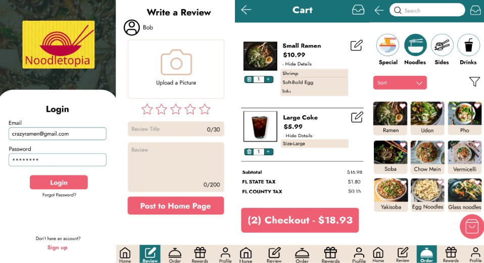

Projects
Exercise App Design

Summary: Exercise App Design allowing users to
explore workouts, keep track of their duration and reps when
exercising, and see different statistics for their workout progress.
Design Decisions: A simple design was used for this
project for simplicity and ease of use. A light lavender purple
color was used to make the workout app have a more relaxing and
calming type of feel and look for users who want to workout with
peace of mind.
To-Do App Design

Summary:To-Do App allowing users to register,
login, create and manage tasks, filter and delete tasks, set
deadlines, mark tasks as completed, see task completion status, and
have a profile.
Design Decisions: A light blue was used for the
background to not be too distracting with a salmony pink to easily
be distinguishable from the background. Tasks can easily be seen by
users in a scrollable list with all the options to manage tasks in
the same area.
Instagram Redesign

Summary: Instagram Redesign for the favorites
feature that allows users to easily access liked and favorited
videos all in one place.
Design Decisions: The favorited option was changed
to be above the like option to decrease the amount of time to get to
the favorites list. Favorites collection was changed to a different
layout for more ease of use with the option to like and see liked
videos along with the user's favorited videos.
Flash Card App Design

Summary: Flash Card App that allows users to create
and study flashcards. Users can also edit, delete, randomize,
expand, and flip flashcards. Users have quick access to create,
review, and see the history of their flashcard decks.
Design Decisions: A nice variety of blueberry-like
colors were used to make the flashcard app look more interesting and
appealing. It helps the app stand out and possibly make users want
to create and study flashcards even more.
Noodletopia-Group Project Design

Summary: An app design for noodle lovers.
Noodletopia allows you to make an account, see menu options, use
reward points for free menu items, write a review, customize noodle
bowls, and order food.
Design Decisions: A simple and clean design was used to help users order with ease and not feel too distracted or overwhelmed. It suits the theme while still looking interesting.